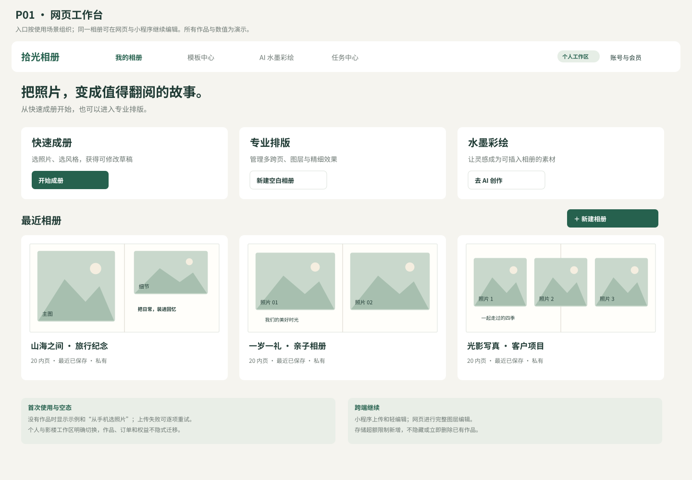
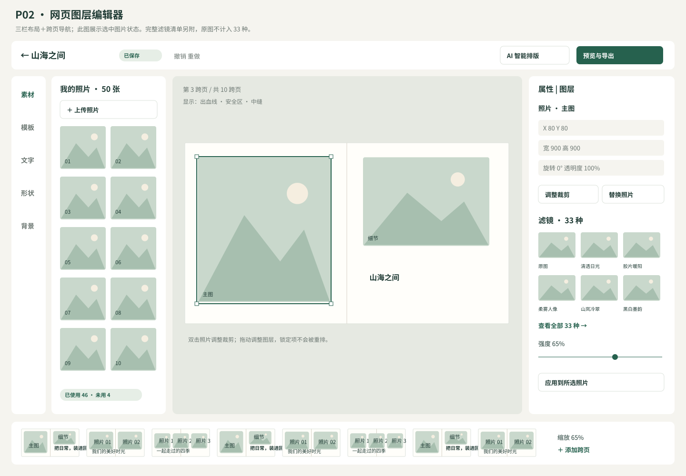
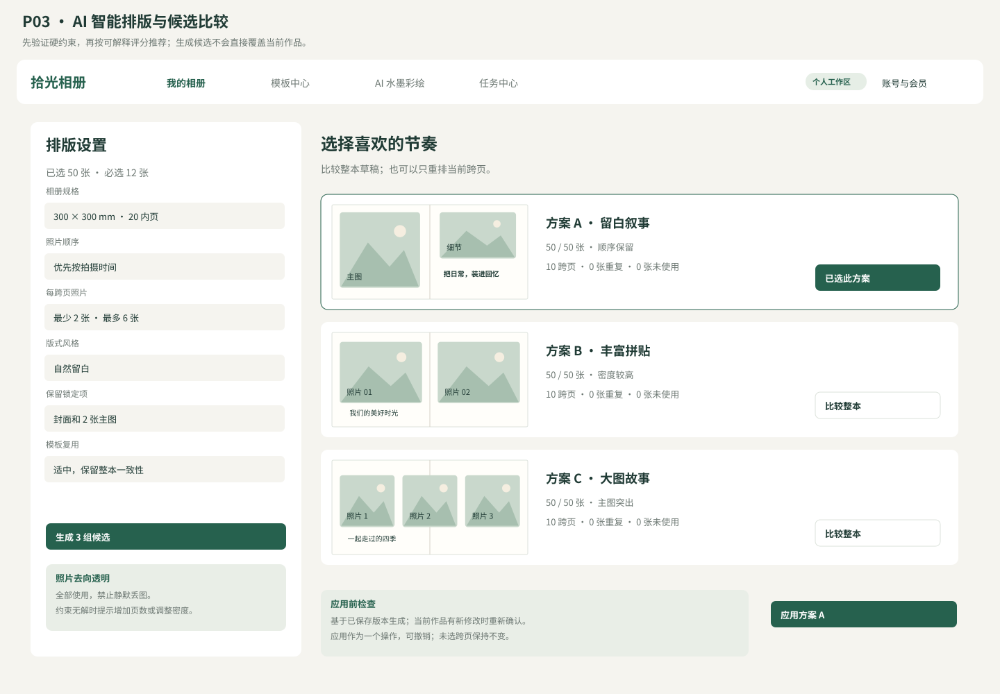
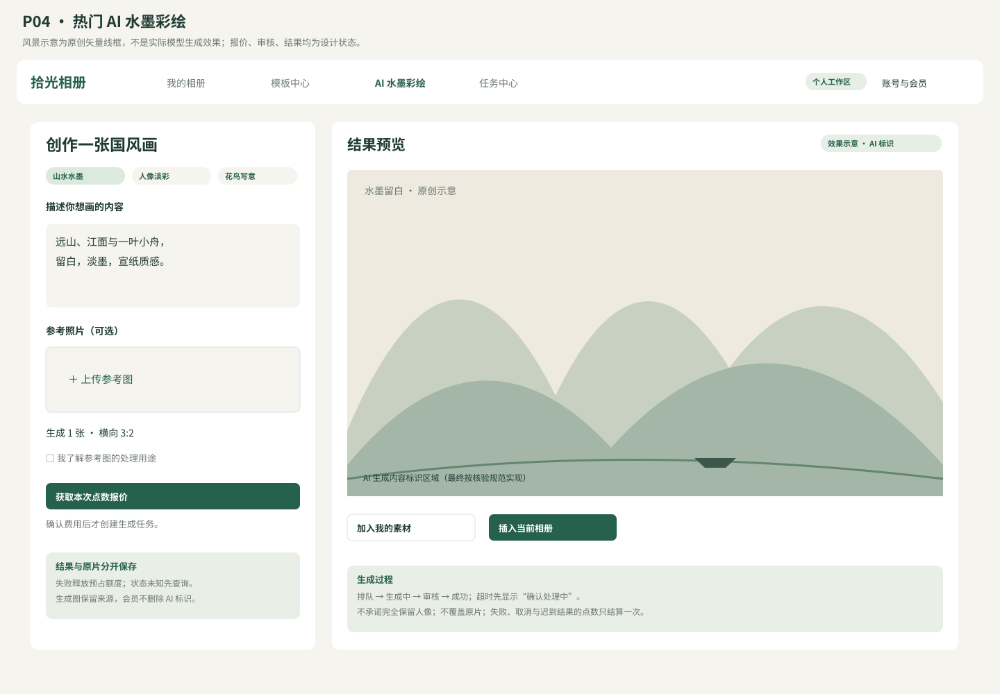
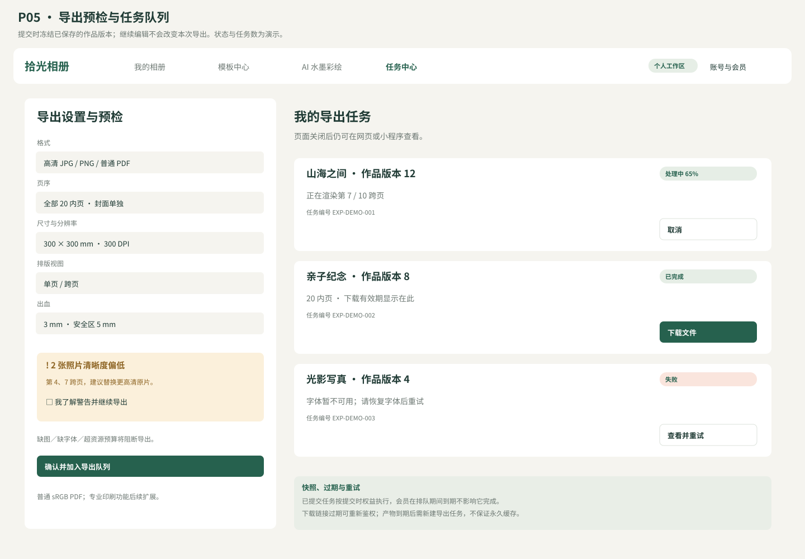
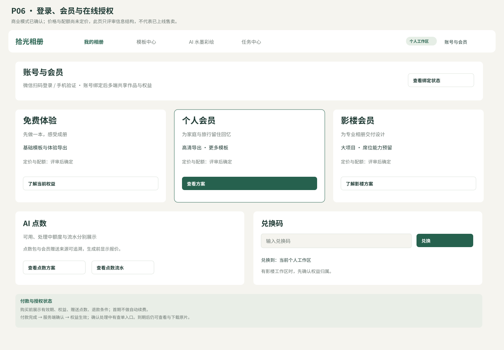
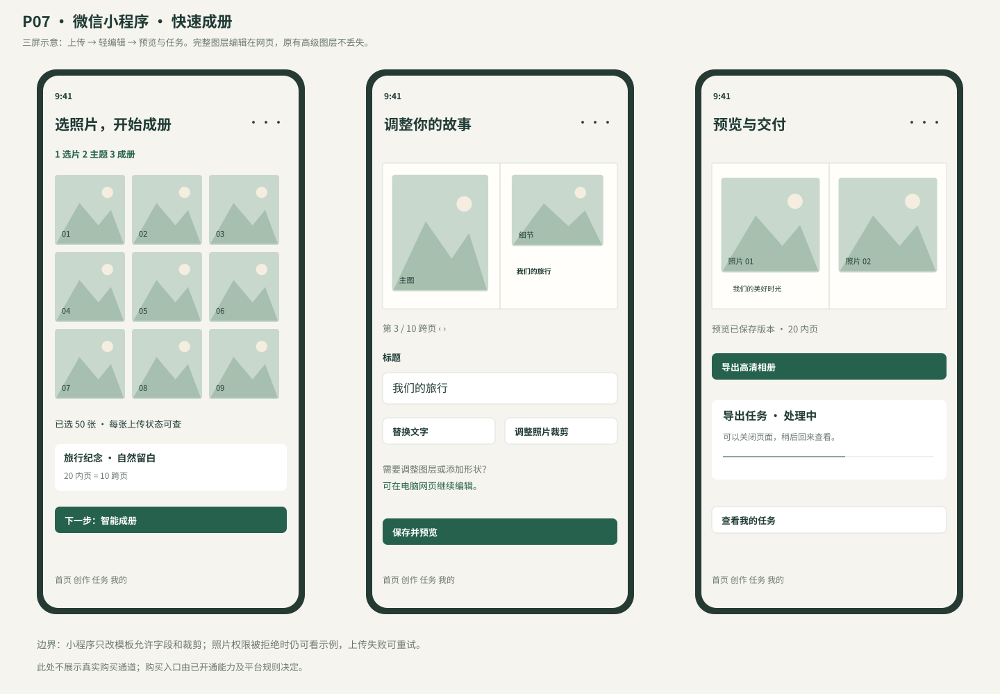
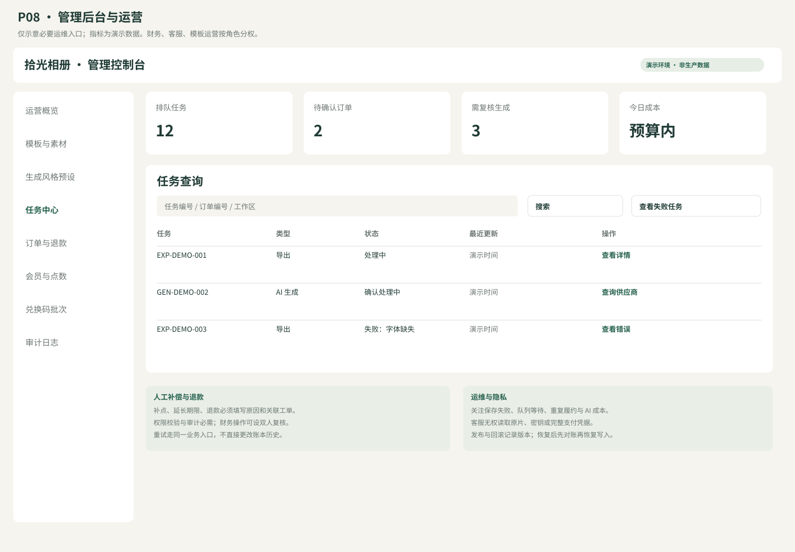

让照片成为可翻阅的故事。
网页完整编辑 · 微信小程序快速成册 · 为 App 预留接口
面向摄影师／影楼与个人，中国大陆优先。以下方案与原型供评审；支付、AI、保存和导出服务尚未实施。
AI 相册排版设计工具 · 评审资料 v0.1
日期：2026-10-21（北京时间）｜状态：需求与方案评审稿，尚未批准进入产品代码实施。
已确认的产品边界
| 决策 | 用户确认 |
|---|---|
| 目标人群 | 摄影师／影楼与普通消费者，首期同时覆盖 |
| 首发端 | 网页与小程序；为 App 预留账号、文档与任务 API |
| 首发市场 | 中国大陆，微信生态、人民币收款 |
| 小程序能力 | 上传、选模板、AI 排版、文字替换／裁剪、预览；完整图层编辑放在网页 |
| 必须覆盖 | 33 种滤镜、文字、形状、模板、AI 智能排版、登录、会员购买／授权、导出队列、AI 水墨彩绘 |
小程序按微信生态设计，尚未涉及其他平台小程序。用户已确认账号会员＋AI 点数，影楼套餐预留席位与兑换码；首期高清 JPG／PNG＋普通 PDF，支持尺寸、DPI、出血和低清预警，专业印刷后续扩展。产品工作名“拾光相册”只用于原型，不代表品牌定名。交付形式已确认：当前项目工作区，Markdown＋Word／PDF＋SVG。
文档地图
| 文件 | 用途 |
|---|---|
| 01-竞品与开源调研.md | 来源、事实、许可证、三条技术路线与推荐 |
| 02-产品需求文档.md | 用户旅程、版本范围、功能与验收条件 |
| 03-开发架构与数据接口.md | 模块边界、文档模型、数据表、接口、任务一致性 |
| 04-会员支付与授权设计.md | 账号、权益、点数、订单、兑换码和退款 |
| 05-测试与运维手册.md | 测试矩阵、性能目标、发布、告警、恢复与排障 |
| 06-原型与交互说明.md | 网页、小程序及后台原型导航与异常态 |
| 07-阶段交付与待决策事项.md | 依赖、里程碑、团队估算与待确认项 |
| filters.csv | 33 个稳定滤镜 ID 与初始参数配方；原图不计入 33 种 |
| prototypes/ | 原创 SVG 线框图；用于设计评审，不含真实个人照片 |
| review.html | 离线阅读入口，含文档、原型、目录和浏览器打印样式 |
结论与阅读顺序
建议先做“多页相册主链路”：登录 → 上传 → AI 候选排版 → 网页微调／小程序轻编辑 → 预检 → 导出队列 → 下载。AI 水墨彩绘作为独立、可计费的素材生成入口，结果可以插入相册，不替代原照片。
推荐路线是 Fabric.js 基础能力加自有文档模型，后端采用模块化单体，AI 和导出通过独立 worker 执行。API 共享，网页和小程序保留各自渲染适配器。模板规则与图片分析构成智能排版的可控基础；大模型只提供可验证的风格和叙事建议。
优先阅读 02 确认功能范围，再看 06 确认界面与流程，之后审查 03、04、05。所有容量、工期、价格、服务目标是设计预算或估算，不是实测成绩或已签商业承诺。
评审准则
- 照片数量、顺序、锁定项和封面是否始终可追溯；换版式可以撤销。
- 浏览器预览和服务器导出是否使用同一文档快照、滤镜版本和字体文件。
- 重复回调、超时、重试、取消不能造成重复扣点或重复开通。
- 小程序不是网页画布的直接移植；轻编辑必须与网页文档相容。
- 大陆支付、AI 服务准入与生成标识以实际主体和官方渠道核验为上线依赖。
文档状态管理
已确认：上表四项范围及功能诉求。推荐：架构、权益、容量、样式。待决策：付费档位、印刷深度、云厂商、AI 供应商、团队和排期。待验证：渲染一致性、低端机内存、图像排版质量和供应商时延。
这些资料可以并行用于产品、技术和视觉评审；它们不是已经完成研发或通过上线验收的证明。
竞品与开源调研
调研日期：2026-10-21。方法：阅读官方产品／帮助页面，以及 GitHub README、许可证正文和仓库元数据。未登录试用、未付款、未实测成册质量，不使用宣传收益数据作为投资依据。
1. 相邻产品及启示
| 产品与定位 | 已由官方资料核实的能力 | 对本产品的设计启示 | 尚未验证 |
|---|---|---|---|
| SmartAlbums，专业相册 | Auto Build 支持跨页数量、图片分组、每跨页照片范围、模板复用程度 | 把图片分组、密度和版式多样性暴露为用户可控参数 | 实际排版质量、中国大陆访问、当前购买条件 |
| Fundy Designer，摄影工作流 | 自动设计向导可选相册规格、照片评级／收藏、排序、每跨页照片数量范围 | 专业入口需要规格、选片、排序和局部换版，不只是一个“生成”按钮 | 本地化与印厂覆盖、当前云版成熟度 |
| Canva，消费者设计 | 相册模板、图片上传与编辑、面向不同纪念场景的入口 | 用旅行、亲子、婚礼等场景组织模板，降低入门成本 | 国内版本功能与许可差异、相册参数限制 |
| Mixbook，消费者相册 | 官网展示 Story Mode，并提供旅行、家庭等相册入口 | 消费者可以从故事与照片开始，随后进入可改的相册草稿 | Story Mode 具体模型、版权条款、效果、国内履约 |
| Polotno，商业 SDK | 提供可嵌入编辑器；定价页现为按使用范围询价，可自托管编辑／渲染 | 作为买 SDK 路线的候选，需比较长期授权费与自研成本 | 报价、合同是否允许本产品场景、微信小程序方案 |
以上都是产品事实的摘要；“启示”为本次设计推论。没有来源能证明这些产品拥有本需求的完整会员授权、33 种滤镜或水墨彩绘组合，不能把它们称为开箱即用替代品。
官方来源：
- SmartAlbums：Auto Build 说明。
- Fundy：Auto Design Options。
- Canva：Photo Books。
- Mixbook：官网与 Story Mode 入口。
- Polotno：SDK 当前询价页、SDK 与 Studio 不同的许可。搜索中仍可看到旧月费文章，本文不把旧报价当作当前报价。
2. 开源与组件候选
| 项目 | 本次核实内容 | 能解决什么 | 仍需开发／评估 |
|---|---|---|---|
| Fabric.js | README 包含交互变换、文字／形状、图片滤镜、JSON／SVG 输入输出；LICENSE 为 MIT | 网页对象编辑器基础 | 多页相册模型、33 个产品配方、保存、权限、模板与 AI、任务队列 |
| Konva | README 包含场景图、拖拽变换、缓存与导出；LICENSE 正文为 MIT | 可定制画布与交互基础 | 文字编辑和产品级编辑器工具需自行组合；后端渲染差异验证 |
| vue-fabric-editor／快图设计 | README 明列图层、历史记录、对齐、裁剪、滤镜和模板；LICENSE 为 MIT | 评估完整编辑器交互和插件组织，也可作为二开候选 | 开源版与商业版边界、依赖升级、模型迁移、资产许可、多页和后端 |
| BullMQ | README 为基于 Redis 的队列；LICENSE 为 MIT | 导出和 AI 任务的执行、重试基础 | 幂等、权利校验、扣点、数据库真相、用户公平性；Pro 功能另算 |
| Diffusers | README 为扩散模型推理／训练工具箱；LICENSE 为 Apache-2.0 | 后续自托管生成服务的代码基础 | 模型权重、LoRA、训练素材许可及 GPU 成本需分别审核 |
| ComfyUI | LICENSE 为 GPLv3 | 工作流探索与美术效果试验候选 | 若分发／修改相关代码需按适用许可处理；自定义节点和模型各有许可 |
特别说明：Konva 的 GitHub 自动识别元数据本次返回 NOASSERTION，但仓库 LICENSE 正文明确写 MIT，结论依据正文。快图 README 同时链接商业版，开源仓库许可不扩展到其商业后端、付费模板或素材服务。
代码来源：
- Fabric.js README／LICENSE。
- Konva README／LICENSE。
- 快图 README／LICENSE。
- BullMQ README／LICENSE。
- Diffusers README／LICENSE。
- ComfyUI LICENSE。
调研快照：Fabric、Konva、快图仓库本次均非 archived；读取时间只代表当日状态。README 和许可证文件的内容 SHA 记录在 evidence-index.json；实施时另锁定依赖版本与提交，不从默认分支直接部署。
3. 三种实施路线
| 路线 | 优势 | 成本与约束 | 适用判断 |
|---|---|---|---|
| A：Fabric.js＋自有相册模型（推荐） | 核心编辑体验可控、可测试、可逐步适配小程序与 App | 前期编辑器工作量最大，需解决渲染和历史记录 | 持续经营产品、专业多页与消费者轻编辑共存 |
| B：快图开源版二开 | 现成交互多，可更快验证网页编辑体验 | 需先审计依赖、版本和产品耦合；无法据 README 承诺节省百分比 | Vue 团队、接受继承其架构且审计通过 |
| C：商业编辑器 SDK | 减少工具栏、文字编辑和基础导出研发 | 持续授权费、许可边界、服务依赖；小程序仍单独实现 | 交期紧、预算能覆盖合同与持续费用 |
推荐 A 的依据是本产品的长期价值集中在相册文档、AI 布局与跨端共享。若团队已掌握 Vue 且想优先验证市场，B 值得做短期技术验证；C 必须拿到具体报价后才可比较总拥有成本。此处没有替用户做最终采购决定。
4. 建议先验证的技术风险
- 同一文档包含中文混排、半透明图层、裁剪、33 种滤镜时，网页与导出的差异。
- 50 个内页跨页、500 张原片的缩略图加载、分页渲染与内存占用。
- 小程序只修改可编辑字段后，网页的高级图层是否完整保留。
- 国内 AI API 的水墨、淡彩、人像保留效果与单次可用结果成本。
- 小程序虚拟权益支付、账号绑定与手机端付费准入的实际可用路径。
5. 大陆上线资料与核验边界
网信办《人工智能生成合成内容标识办法》已于 2025-09-01 施行，涉及显式、隐式标识和下载导出等场景。本产品应将生成标识作为素材与导出数据链的一部分。是否适用具体条款及备案／评估流程，需要结合实际服务方式确认；文档中的实现策略不是法律意见。官方正文。
微信开发文档部分页面本次无法直接打开。腾讯云 CloudBase 官方组织仓库中的虚拟支付参考明确区分虚拟支付与普通微信支付。它是辅助资料，不能代替主体后台的当前准入规则、合同和官方 API 文档。费用、iOS 支持、最低客户端版本不写死在本产品承诺中。
微信支付普通商户流程的签名验证、重复通知与查单，可参考支付回调和查单指引及通用参数与 UnionID 说明。虚拟支付采用独立适配器，不能照搬同一组回调与签名代码。
产品需求文档 PRD
版本 v0.1｜评审稿｜2026-10-21。已确认：影楼＋个人、网页＋微信小程序、大陆首发、小程序轻编辑、账号会员＋AI 点数、影楼席位与兑换码预留；首期高清 JPG／PNG＋普通 PDF，支持尺寸、DPI、出血与低清预警，专业印刷后续扩展。
1. 产品目标与用户
让普通用户从一组照片快速得到可编辑、可导出的多页相册；让摄影师在同一文档上进行精细排版和批量交付。AI 的价值是减少选片组织和反复排版，而用户始终可以检查、替换与撤销。
| 用户 | 任务 | 首期成功体验 |
|---|---|---|
| 个人用户 | 旅行、亲子、家庭、纪念相册 | 手机上传、选风格、得到可调整的草稿，明确照片去向 |
| 摄影师／影楼设计师 | 婚纱、写真、亲子相册 | 网页管理多跨页，保留选片顺序与锁定项，批量导出 |
| 影楼管理员（后续席位扩展） | 采购套餐与分配资源 | 首期有工作区和权益归属模型，后续无需迁移个人订单 |
| 运营／客服 | 模板维护、任务查询、订单售后 | 在授权后台定位问题，人工处理留痕 |
建议首轮邀请 5 家影楼与 15 位个人用户，使用有授权的样本测试。设计验收目标：个人从 50 张照片到可编辑草稿的完成率 ≥80%；摄影师处理同一套授权样本的中位耗时比手工基线减少 ≥40%。这些是试用指标，尚无实测依据。基线和任务难度必须一致，不能用 AI 生成耗时代替完整交付耗时。
2. 版本与范围
| 能力 | 首期 P0 | 后续 P1／P2 |
|---|---|---|
| 网页编辑 | 多页、图层、裁剪、文字、形状、模板、33 滤镜、撤销、自动保存 | 高级路径、复杂矢量、协同光标、PSD 互转 |
| 小程序 | 选片上传、模板、AI 排版、文字替换、单图裁剪、预览与任务中心 | 更多触屏编辑；完整编辑器不纳入首期 |
| 智能排版 | 分组、模板匹配、裁剪保护、3 个候选、局部重排 | 学习用户偏好、复杂叙事生成、自训练模型 |
| AI 水墨彩绘 | 文生图、图生图、预设、点数报价、任务结果插入相册 | 自训练 LoRA、批量生成、多模型自动竞价 |
| 登录与付费 | 微信登录／绑定、网页短信备选、会员与点数、订单退款 | 企业 SSO、复杂营销、自动续费、多级分销 |
| 影楼 | 个人工作区＋影楼工作区的数据结构；兑换码基础流程 | 多席位邀请管理、客户审片协作、企业账期 |
| 导出 | 队列、快照、分辨率预检、高清图片、普通 PDF | 由印厂确认的 PDF/X、CMYK 与专用包装 |
| 后台 | 模板发布、套餐配置、任务／订单查询、审核、审计 | 素材开放市场、全渠道经营分析 |
“预留”只承诺数据与接口扩展点，不包含完整界面和联调交付。首期不做印刷物流、公开社交社区、离线设备许可证或完整 App。
3. 术语与容量预算
页 page 是一张单面；跨页 spread 通常包含左右两个内页；封面独立管理。界面显示“20 内页＝10 跨页”，避免页数歧义。首期草案允许 1–50 个内页跨页，即 2–100 个内页；封面正面、背面另存，不计内页数量。书脊和连体封套留到印厂方案。
建议容量上限：单项目 500 张照片、单图 25MB、100 个图层／跨页；服务端按像素总量限制解码，首期单图不超过 80MP。具体上限要通过目标机型实测后配置，不能仅凭文件扩展名或压缩大小判定安全。
首期支持 JPEG、PNG；WebP 是否开启由小程序兼容矩阵决定。HEIC、RAW、PSD 暂不接受，明确告知先转 JPEG／PNG。SVG 仅接收平台审核的形状素材，不允许任意上传含脚本 SVG。导出资源上限独立控制，超预算时提示降低 DPI／拆分任务，不静默降质。
4. 用户主流程
网页：登录 → 新建相册（场景、尺寸、页数）→ 上传／选片 → 选模板 → 智能排版候选 → 图层编辑 → 预检 → 创建导出 → 查看进度 → 下载。
小程序：微信登录 → 从相册选片 → 选择主题与页数 → 智能成册 → 调整文字与裁剪 → 预览 → 导出／任务中心。需要移动图层、加形状等高级操作时，显示“可在电脑网页继续编辑”；此提示不承担购买引导功能。
AI 创作：选水墨／淡彩预设 → 输入描述，或在明确同意处理人像后选择参考图 → 展示预计点数 → 创建任务 → 预览结果 → 选“加入素材”或“插入当前页”。生成结果保留来源标签，不覆盖原图。
5. 详细功能与验收
| ID | 要求 | 关键交互与验收 |
|---|---|---|
| AUTH-01 | 多端登录 | 微信服务端换取身份；网页登录二维码过期可刷新；首次登录不强制提交非必要信息 |
| AUTH-02 | 账号绑定与注销 | 多端资料合并须用户验证；微信 OpenID 不直接作为内部用户主键；注销前说明订单与删除规则 |
| AST-01 | 上传与素材管理 | 逐项显示进度、失败重试、重复检测、方向校正；上传完成并通过解码后才可排版；删除使用中素材给出影响范围 |
| DOC-01 | 新建、保存与版本 | 显示保存中／已保存／失败／离线；网络恢复后冲突不静默覆盖；至少保留最近 20 个恢复快照（建议配置） |
| EDT-01 | 图层基础 | 图片、文字、矩形、圆、线条；选中、多选、组合、锁定、显隐、复制、删除、排序、对齐、吸附、旋转、缩放、透明度 |
| EDT-02 | 照片裁剪 | 双击进入裁剪；默认 cover 可切 contain；图片坐标与图框坐标分离；替换图保留图框；越界和低清可见 |
| EDT-03 | 文字 | 中文／拉丁混排，字体、字号、颜色、粗细、对齐、字距／行距；文字溢出提示；字体不可用时禁止悄悄替换后导出 |
| EDT-04 | 33 个滤镜 | 原图单列；F01–F33 稳定 ID；强度 0–100%；只对图片图层生效；可一键应用到所选照片；撤销作为一个操作 |
| EDT-05 | 历史与页面 | 撤销／重做至少 100 次操作（内存预算内）；跨页增加／删除／排序；删除前确认数量；复制跨页不共享可变图层对象 |
| TPL-01 | 模板 | 按婚礼、旅行、亲子、写真、国风筛选；模板带尺寸、槽位和可编辑字段；替换前预览，保留旧版本可撤销 |
| LAY-01 | 智能排版 | 输入照片、顺序、页数、风格、每跨页张数范围、锁定项；返回 3 组候选；标记未用片与重复片；应用前比较 |
| LAY-02 | 局部重排 | 用户选定跨页，固定的图框／文字／照片保持；未选跨页内容不变；重排不得遗漏必选照片；不可能满足时解释冲突 |
| GEN-01 | 水墨彩绘 | 至少提供山水水墨、人像淡彩、花鸟写意 3 个初始预设；各预设有公开可使用的示例与参数版本 |
| GEN-02 | 生成任务 | 支持描述、参考图、比例、强度；创建前展示点数与参考图用途；失败可重试，结算规则可查；不承诺人脸完全一致 |
| PAY-01 | 会员购买 | 显示价格、有效期、权益、点数和退款规则；支付完成以服务端确认；不默认勾选自动续费，首期不做自动续费 |
| LIC-01 | 授权／兑换 | 在线权益统一；兑换码可批次、限制期限与次数、停用；每次兑换写审计；不等同设备绑定或离线许可证 |
| EXP-01 | 导出预检 | 显示页数、尺寸、DPI、缺图、低清、溢出、字体、未生成完成素材和权益问题；阻断与警告明确区分 |
| EXP-02 | 导出队列 | 显示排队／处理中／打包／完成／失败／取消；切端后可继续查看；失败给可理解原因、重试入口和任务编号 |
| ADM-01 | 运营后台 | 模板、滤镜版本、生成预设、SKU、兑换码和任务管理；权限分离；人工调整权益必须填写原因并留痕 |
首期“33 种滤镜”是 33 个本产品命名的非生成式配方，不宣称某开源库自带 33 种同名效果。filters.csv 是配方草案，视觉验收通过后发布 recipeVersion；AI 水墨彩绘是独立的生成式任务。
6. 智能排版规则
先做可解释方案：质量和重复提示 → 按时间／用户章节分组 → 按横竖比例匹配模板槽位 → 根据主体位置建议裁剪 → 对留白、密度、重复版式和故事顺序评分 → 生成 3 个候选。
没有用户明确指示时，不删除、不覆盖、不上传原片到大模型。人像／主体分析只用于当前项目构图，不建立跨项目人脸身份库。用户选择“全部使用”时，每张照片都必须分配；若容量不足，返回所需页数和备选方案。只有用户允许选片时才可列出未选照片。
验收样本应覆盖横竖混合、无 EXIF、黑白与彩色、宠物、人像、风景、重复片和低清片。硬约束满足率要求 100%；视觉美观以目标用户盲评为准，建议初始目标可接受候选率 ≥80%。指标失败先修改模板和评分，不用“AI 随机性”解释硬约束错误。
7. 异常、费用与权益
- 网络中断：保留本地待同步变更；恢复后按基准 revision 保存；冲突时复制为恢复草稿或由用户选择版本。
- 会员到期：仍可查看和下载原始照片、删除数据；保留作品和已生成结果。新建付费导出以提交时权益为准。
- 排队期间到期：已经成功提交并冻结权益的任务正常完成；已到期下载链接可重新鉴权签发。
- AI 超时：进入“确认处理中”，先查供应商任务，不能边退款边无控制重发；最终只结算一次。
- 导出失败：保留编辑内容，可按错误原因修复后新建任务；原任务与重试结果可追溯。
- 内容审核不通过：展示原因类别与申诉入口；不把违规内容回显到公共页面。
8. 付费产品草案
免费体验、个人会员、影楼会员三档；会员控制存储、导出分辨率／并发、模板权限等；AI 点数单独预占、成功结算、失败释放。首期影楼套餐可以先由管理员配置单一使用者，保留席位上限、邀请和角色扩展字段。价格和具体赠送额度需依据模型成本与用户访谈确定，不在原型中伪造已经确定的收费标准。
9. 数据、隐私和生成标识
项目与原片默认私有；分享链接有期限和撤销能力，首期不提供公开作品广场。上传位置与拍摄时间如用于分组需明确说明；公开预览和下载成品默认不带 GPS。原片不得默认用于训练或公开素材库。
AI 生成的素材及包含该素材的导出须保留生成来源链；标识与适用规则核验后实现，付费会员“去品牌水印”不能被解释为删除法定 AI 标识。首期不提供无显式标识的生成内容输出服务。人像参考图需要对应授权提醒与用途同意。
10. 端到端验收场景
- 个人在小程序上传 50 张旅行照，选 10 跨页，比较候选并修改标题；网页继续编辑，内容一致。
- 摄影师上传 200 张选片，锁定封面和两张主图，局部重排后必选图保留；滤镜、文字和图层顺序正确导出。
- 会员购买收到同一支付通知多次，只开通一次；同一兑换码并发兑换只生效一次。
- AI 服务超时后最终成功，点数只结算一次；确认失败时恢复可用点数。
- 导出提交后继续编辑，相册新修改不混入已经排队的快照；队列中刷新页面、切端均能找回任务。
- 到期、退款、注销与项目删除并发时，权益、任务和文件访问遵循同一套规则。
开发架构、数据与接口设计
v0.1 评审稿。推荐技术方案，尚未锁定供应商、依赖版本或批准产品代码实施。
1. 架构与职责
网页（完整编辑） 微信小程序（轻编辑） 未来 App
\ | /
HTTPS / API v1
|
API 模块化单体 + 管理后台
认证 | 工作区 | 素材 | 相册 | 模板 | 权益 | 订单 | 任务
| | |
PostgreSQL 对象存储 Outbox 投递器
| |
+---------- 任务事实记录 ------ 队列（BullMQ）
/ \
导出 worker AI worker
固定渲染容器 供应商适配器
\ /
私有结果存储
初期采用模块化单体降低部署与事务复杂度；AI、导出独立进程隔离时延和内存。模块只通过应用接口调用，不任意访问其他模块的数据库写接口。数据以 PostgreSQL 为事实源，队列用于调度，不能把 Redis 中的任务记录当唯一订单或扣点依据。
建议前端 TypeScript＋React＋Fabric.js；若选快图二开路线则改为 Vue，业务文档模型不变。小程序推荐原生 TypeScript＋WXML 作为首期，减少完整网页画布适配成本。后端建议 Node.js 当前受支持 LTS＋TypeScript（例如 NestJS），Python 图像分析服务仅在确需时增加。依赖版本、容器摘要和 lockfile 在技术验证后锁定，文档不把 latest 当可复现版本。
2. 各边界的接口
| 模块 | 提供能力 | 依赖 |
|---|---|---|
| Auth | 内部用户、外部身份、会话、账号绑定 | 微信服务端、短信供应商 |
| Workspace | 所属权、成员角色、席位上限 | Auth、Entitlement |
| Asset | 上传凭据、解码验证、素材元信息、授权引用 | 对象存储、图片处理 worker |
| Document | 读取／保存 revision、历史、导出快照 | Workspace、Asset |
| Layout | 从照片与约束生成候选文档片段 | Template、Asset 分析信息 |
| Generation | 报价、任务、供应商结果、生成来源 | Entitlement、Ledger、审核服务 |
| Billing | SKU、订单、支付适配、退款、兑换 | 支付渠道、Entitlement |
| Export | 预检、快照、任务、私有产物 | Document、Entitlement、队列 |
3. 跨端文档模型
自有 schema 为业务真相，不直接把 Fabric 私有序列化作为唯一文档格式。网页 adapter 在自有层模型与 Fabric 对象之间映射；小程序只修改允许编辑的字段，服务端合并合法 patch。客户端不认识的图层类型必须原样保留，不能在保存时删除。
{
"schemaVersion": 1,
"projectId": "prj_demo",
"revision": 12,
"unit": "px96",
"colorSpace": "srgb",
"pageSize": {"width": 1133.858268, "height": 1133.858268},
"printProfile": {"bleedMm": 3, "safeMm": 5},
"cover": {"front": [], "back": []},
"spreads": [
{
"id": "spr_01",
"background": "#FFFFFF",
"layers": [
{
"id": "lyr_photo_01", "type": "image", "assetId": "ast_01",
"x": 80, "y": 80, "width": 900, "height": 900,
"rotation": 0, "opacity": 1, "visible": true, "locked": false,
"crop": {"x": 0.1, "y": 0, "width": 0.8, "height": 1},
"filter": {"presetId": "F07", "recipeVersion": 1, "strength": 0.65, "seed": 1729}
},
{
"id": "lyr_text_01", "type": "text", "text": "我们的旅行",
"x": 1250, "y": 250, "width": 800, "height": 200,
"rotation": 0, "opacity": 1, "visible": true, "locked": false,
"fontAssetId": "font_demo", "fontSize": 56,
"fontWeight": 400, "lineHeight": 1.4, "letterSpacing": 0,
"fill": "#243B35", "editableFields": ["text"]
}
]
}
]
}
规则：
- 坐标均为 96DPI 逻辑像素；物理毫米＝逻辑 px ×25.4÷96；导出像素＝逻辑 px ×目标 DPI÷96。保留 6 位小数，最终输出像素才取整。
- 一个跨页宽度为单页宽度的两倍，高度不变；图层数组从底到顶。封面正背面各以单页尺寸存储，连体封面另扩展模型。
- 图片先校正 EXIF 方向，crop 为校正后源图的归一化矩形，范围必须位于 [0,1]，非空。裁剪编辑必须维持图框比例，或通过独立 fitMode 明确留白。
- 图片、字体与滤镜引用不可变版本。素材引用不得包含外部任意 URL；fontAssetId 对应授权文件及 SHA-256。
- Group 通过子图层和变换树表达；禁止循环、重复 ID、NaN／Infinity 和超深嵌套，建议深度最多 5。
- 文档保存校验 schema、素材所属工作区、字体／模板权限和资源预算。付费模板不能只靠前端隐藏。
- schema 迁移是纯函数 v1→v2；原 revision 不覆写。读取旧版时可转换，保存生成新 revision；未知未来版本返回可理解错误。
4. 关键数据实体
所有时间数据库存 UTC、前端按用户时区显示；金额用人民币分的整数；点数用整数。业务表使用内部随机 ID，公开 API 不暴露自增序列。
| 表 | 核心字段 | 约束与用途 |
|---|---|---|
| users | id, status, deletion_requested_at | 内部身份，不以手机号或 OpenID 为主键 |
| auth_identities | user_id, provider, app_id, subject, union_scope, union_id | UNIQUE(provider, app_id, subject)；UnionID 只在同平台范围可靠时绑定 |
| sessions | user_id, refresh_hash, expires_at, revoked_at | 刷新凭据仅存 hash，可单端或全端撤销 |
| workspaces / members | owner_id, kind / workspace_id, user_id, role, status | UNIQUE(workspace_id,user_id)；个人与影楼都是工作区 |
| assets | workspace_id, object_key, hash, width, height, state, origin, provenance_id | 不可变字节；同 hash 去重不泄露其他用户文件是否存在 |
| font_assets | font_id, version, sha256, license_ref, embedding_allowed | 字体授权和嵌入能力单独记录 |
| projects / revisions | workspace_id, current_revision / project_id, number, doc_key, hash | UNIQUE(project_id,number)；revision 和 doc_key 不可变 |
| templates / versions | status, current_version / schema, slots, license_ref | draft→review→published→retired；历史引用仍可读取 |
| sku_versions | sku_id, price_fen, duration_days, feature_json, credit_grant, status | 订单保存具体版本，调价不改历史订单 |
| orders / payment_events | workspace_id, sku_version, amount_fen, state, channel / provider_event_id | UNIQUE(channel,provider_event_id)；每次支付尝试另建 payment_attempt |
| subscriptions / entitlement_grants | workspace_id, source_order_id, start_at, end_at, features | 同一 source_order_id＋grant_type 唯一 |
| credit_lots / credit_ledger | workspace_id, granted, expires_at / operation_id, type, amount, lot_id | operation_id 唯一；ledger 追加，不直接改历史流水 |
| credit_reservations | task_id, quote_id, state, amount, lot_allocations | UNIQUE(task_id)；每批点数来源可追溯 |
| jobs / job_attempts | kind, state, snapshot_id, fence, provider_job_id / attempt, error_code | UNIQUE(workspace_id,idempotency_key)；状态变更乐观锁 |
| export_snapshots / outputs | revision_id, asset_manifest, entitlement_snapshot / job_id, object_key, expires_at | 输出按 job_id＋artifact_index 唯一 |
| redemption_batches / codes / redemptions | sku_version, expiry / code_hash, max_uses / code_id, workspace_id | 一次性码通过事务锁防双花；原始码不入日志 |
| outbox / audit_events | event_key, payload, sent_at / actor, action, target, reason | event_key 唯一；财务与人工操作可追溯 |
付款、发放、兑换、点数结算等事务都在主库完成；队列断开不能使账本回滚为“未付”。个人创建影楼工作区不隐式迁移会员或作品，迁移须明确操作。
5. API v1 合同
一般响应：{data, requestId}；列表加 cursor 和 hasMore。错误：{error:{code,message,retryable,details},requestId}。鉴权成功不代表资源访问成功；每个项目、素材、任务、订单接口都再次验证工作区成员和角色。
| 方法与路径 | 输入要点 | 输出与错误 |
|---|---|---|
| POST /v1/auth/wechat/mini | 临时 code、客户端信息 | 服务端换身份；会话；code 不重复使用 |
| POST /v1/auth/web/qr-sessions | 无敏感参数 | 一次性场景 token、有效期；扫码确认后单次消费 |
| POST /v1/auth/bindings | 现有会话＋目标身份重新验证证明 | 成功绑定；冲突需显式合并，不按昵称自动合并 |
| POST /v1/workspaces/{wid}/uploads | filename,size,declaredMime | 受限上传签名、assetId；额度不足 403／413 |
| POST /v1/assets/{aid}/complete | 对象上传完成标记 | pending_scan；HEAD／解码通过后 ready |
| POST /v1/workspaces/{wid}/projects | 场景、尺寸、页数 | project、revision=1 |
| GET /v1/projects/{pid} | 可选 revision | 自有文档、manifest、revision、ETag |
| PATCH /v1/projects/{pid} | If-Match、commandId、白名单 patch | 新 revision；冲突 409 REVISION_CONFLICT |
| GET /v1/templates | 场景、比例、cursor | 可见模板版本及授权标记 |
| POST /v1/projects/{pid}/layout-jobs | baseRevision,assets,constraints,seed | 202 job；不修改当前文档 |
| POST /v1/projects/{pid}/apply-layout | candidateId,baseRevision | 验证基线后生成 revision；冲突 409 |
| POST /v1/generation-quotes | styleVersion,ratio,count,referenceAssetId | quoteId,cost,expiresAt；输入审查失败 422 |
| POST /v1/generation-jobs | quoteId,description,consentRef | Idempotency-Key；202 job；余额不足 402 |
| GET /v1/workspaces/{wid}/entitlements | 无 | features,expiresAt,availableCredits,reservedCredits |
| POST /v1/orders | skuVersion,channel,clientPlatform | 服务端定价与支付参数；渠道不可用 422 |
| GET /v1/orders/{oid} | 无 | authoritative state、履约状态；不暴露完整支付数据 |
| POST /v1/redemptions | code,workspaceId | 原子兑换结果；限速、通用无效码提示 |
| POST /v1/projects/{pid}/preflight | revision,format,dpi,pageRange,view | 阻断项、警告项、estimatedPixels、normalizedSpecHash |
| POST /v1/export-jobs | revision,preflightToken,normalizedSpecHash,warningsAcknowledged | Idempotency-Key；202，冻结 revision 与权益 |
| GET /v1/jobs/{jid} | 无 | state,progress,stage,error,artifactSummary |
| POST /v1/jobs/{jid}/cancel | 无 | 202 cancel_requested；若已成功返回既有结果 |
| POST /v1/jobs/{jid}/retry | 原失败任务引用 | 新 jobId、关联 parentJobId；重新检查输入和权益 |
| POST /v1/outputs/{oid}/download-token | 无 | 5 分钟私有签名 URL；过期可重新鉴权申请 |
| POST /v1/payment-callbacks/{channel} | 原始 body 和原始 headers | 独立支付／虚拟支付验签适配器 |
幂等规则：Idempotency-Key 在 workspace 内唯一，至少保存 7 天（配置值）。同 key 同请求 hash 返回原结果；同 key 不同 payload 返回 409 IDEMPOTENCY_MISMATCH。禁止用按钮禁用代替服务端幂等。
错误码最小集：AUTH_EXPIRED、FORBIDDEN、ASSET_NOT_READY、ASSET_MISSING、FONT_UNAVAILABLE、REVISION_CONFLICT、LAYOUT_CONSTRAINT_UNSATISFIABLE、CREDIT_INSUFFICIENT、QUOTE_EXPIRED、PAYMENT_PENDING、CHANNEL_UNAVAILABLE、EXPORT_PIXEL_LIMIT、PRECHECK_BLOCKED、PROVIDER_TIMEOUT、CONTENT_REJECTED、CANCELLED。
6. 保存、跨端与冲突
网页本地操作先写 command history，空闲约 2 秒后批量提交，持续操作时最多 10 秒触发一次；关键动作和离开编辑页触发保存。显示“已保存”必须以服务端 revision 确认为准。网页可用 IndexedDB 暂存，小程序用本地缓存暂存少量命令，不缓存无限原片。
PATCH 在事务中比较 current_revision；成功追加 revision 并更新指针。小程序 patch 只可修改 templateEditableFields、crop、页面顺序等已授权字段，服务端不能接受任意对象反序列化。冲突返回当前 revision 和摘要，客户端允许另存恢复草稿；首期不实现自动多人协同合并。
App 预留：使用同一 REST schema 和内部用户，不传递微信 session_key；App 登录、通知、支付 adapter 独立。预留接口不代表承诺使用 Flutter／React Native 或首期交付安装包。
7. AI 排版与生成分离
排版输入：照片尺寸、可选的时间分组、主体安全区域、用户顺序、每跨页数量范围、必选／禁用／锁定照片与模板风格。质量分析在自有服务内完成；不默认把全部原片提交第三方模型。
候选评分草案：0.30 裁剪主体保留＋0.25 时序连贯＋0.20 留白密度＋0.15 版式多样性＋0.10 色调一致。分数仅用于排序；必选、锁定、页数与权限是硬约束，不能靠总分抵消。无可行解则返回冲突约束，不降级删片。固定 seed 可复现规则候选；供应商生成图不保证逐像素复现。
大模型可选提供“章节／风格／标题建议”结构化 JSON；通过 schema 和长度验证后再使用，不执行模型输出代码，也不直接接受模型生成的任意坐标。供应商不可用时，规则排版仍可运行。
AI 水墨彩绘通过 GenerationProvider：quote→submit→query→cancel（若支持）→fetchResult；记录 providerRequestId、modelId、modelVersion、styleVersion、seed、参考素材授权和生成标识。凭据仅在服务端；超时不自动跨供应商重复提交付费任务。
8. 33 滤镜和一致渲染
filters.csv 定义 33 个产品预设；强度是最终效果与原图的线性光域混合系数。配方操作顺序固定；可调操作在归一化 sRGB 中处理，gamma 定义为 out=in^(1/gamma)，exposure 定义为乘 2^EV 后截断。contrast 以 0.5 为轴，saturation 基于固定亮度权重；temp／tint 的矩阵、vignette、duotone、grain 实现需在验证阶段固定并发布。
同一预设的 CPU／GPU 路径必须对同一张测试图比较；不能用 CSS filter 做预览、另写不一致的服务端滤镜。高质量缩放、模糊、颗粒需与导出倍率关联；颗粒 seed 固定，滤镜应用于原始方向校正图再裁剪，避免预览和导出顺序变化。
首期推荐用固定 Chromium 版本加载同一渲染包，在服务器按跨页渲染并分块／逐页编码，避免浏览器和 Node canvas 字体差异。中文字体在容器中以授权文件加载并等 document.fonts.ready；缺字体直接失败。普通 PDF 首期采用高分辨率栅格页，明确不承诺可搜索矢量文字、PDF/X 或 CMYK。
9. 导出快照与任务一致性
提交事务：确认 preflightToken 尚有效且绑定 revision＋参数 hash → 检查权限和资源预算 → 创建 immutable snapshot、job、权益快照、必要配额预占 → 写 outbox → 提交。投递器把事件送队列；重复投递靠 jobId 去重，不追求依赖分布式“恰好一次”。
状态：queued→running→packaging→succeeded；临时故障 running→retry_wait→queued；终态 failed／cancelled。取消先进入 cancel_requested，由 worker 在安全边界停止。每次抢占任务取得递增 fence；旧 worker 失去租约后不得提交结果。终态与 fence 更新采用条件写。
产物先写临时对象；数据库通过当前 fence 将该对象绑定输出后才可下载；输掉竞争的临时对象清理。取消若先完成，迟到结果不再发布；若成功先完成，取消返回完成状态，不假装已取消。源素材和字体在任务引用期间有 pin，用户删除先撤访问权，后台在任务结束和保留期后清理，避免排队任务读到消失资源。
默认重试最多 3 次，建议退避 10／30／90 秒加抖动。格式错误、缺字体、无权限不重试；OOM 不盲目重复同资源申请；输出过大需用户调整配置。数据库重建队列依据 jobs＋outbox，不根据 Redis 余额恢复财务账本。
10. 安全与部署边界
- 私有存储、短期签名 URL、HTTPS、工作区级鉴权、登录与兑换限速。Web 会话优先 HttpOnly Secure SameSite cookie，并配置 CSRF；小程序用短期 token＋轮换刷新。
- 上传采用限定 key、长度和 MIME 的凭据；完成后校验 magic bytes、解码像素和病毒／格式异常。CORS 只放行产品域名，不允许任意远程图片导致画布污染。
- 渲染 worker 只读取 manifest 中的自有对象与字体；阻断任意 URL、内网地址和 file://。禁用未经审核脚本与 SVG 外部引用，设置执行时间、CPU、内存和像素预算。
- 支付回调保存可重放事件摘要与结果，不记录密钥、完整手机号、签名凭据或原始照片。管理后台独立角色，财务、运营、客服按职责授予权限。
- 开发、预发、生产分离存储桶、数据库、支付和 AI 配额；监控不携带原图、完整提示词或访问 token。
11. 交付合同
开发开始前应形成：正式 OpenAPI、可执行文档 JSON Schema、锁定的滤镜 manifest、数据库迁移、模板 schema、渲染样本和供应商适配契约。以上文档已规定方向与字段，但不是已跑通的服务或 SDK。协议例子不能直接当作生产验证器使用。
会员、支付、点数与授权设计
v0.1 评审稿。用户已确认账号会员＋AI 点数，影楼套餐预留席位与兑换码。首期采用在线权益，不做设备绑定／离线授权，不启用自动续费。
1. 商品与权益分离
SKU 是售卖对象；订单记录当时成交内容；权益是用户当前可使用的能力；点数是按批次记账的 AI 使用额度。前端展示的会员标签不能作为授权依据。
| 档位 | 目标用户 | 推荐权益方向 | 首期状态 |
|---|---|---|---|
| 免费体验 | 新用户 | 基础模板、有限存储与体验导出、明确的试用 AI 额度 | 额度与品牌水印规则待定 |
| 个人会员 | 家庭／旅行相册 | 更多模板、高清导出、更大存储 | 支持期限购买，价格待定 |
| 影楼会员 | 摄影师／工作室 | 大项目、高导出配额／并发、商用模板范围 | 首期单使用者；seat_limit 和工作区角色预留 |
| AI 点数包 | 有生图需求者 | 固定数量点数与有效期 | 独立 SKU，可与会员赠送点数共存 |
不在草案中写“无限生图”或“终身无限导出”。会员移除品牌水印不改变 AI 来源标识。模板可用于商业交付的范围由具体资产许可证决定，不能把会员身份当作所有素材的商用许可。
2. 账号统一与工作区
内部 user_id 唯一；微信身份按 provider＋app_id＋openid 存储。UnionID 存在且来源在同一开放平台范围内时作为关联依据；缺失时允许登录，后续通过受验证的绑定流程关联。手机号相同或昵称相同都不是自动合并资产、订单的充分证明。
网页支持微信扫码登录，短信作为可配置备用。扫码会话 token 需短期有效、一次消费、服务端确认；小程序登录 code 只在服务端换身份。会话刷新轮换并检测重用。用户退出或账号禁用后撤销会话。
权益默认属于工作区；个人工作区只有本人。影楼工作区预留 owner／admin／designer／viewer，购买和兑换要明确当前工作区。首次不实现多席位邀请 UI，但数据结构不能把席位等价于登录设备数。未来成员离职只撤销成员访问，保留影楼作品。
3. 普通支付与虚拟权益支付
网页购买与小程序数字权益购买走独立渠道 adapter。小程序会员／点数按适用的虚拟支付规则核验，不默认复用实物商品 wx.requestPayment 流程。iOS、Android、客户端版本和主体资质的准入差异通过服务端 capability 返回；未开通渠道不展示可用购买按钮，也不自行设计绕过规则的站外引导。
支付 adapter 至少提供 createPayment、verifyEvent、query、refund、normalizeStatus。不同渠道签名、事件 ID 和履约回调各自实现；统一到内部“收款已确认”“可履约”“退款已确认”事件。若某渠道发货需同步应答，则其 ACK 必须满足该渠道官方合同，不能一律先 ACK 再发权益。
需在平台后台核验：运营主体、类目、虚拟支付权限、iOS 开通、商品映射、结算、退款渠道、跨端权益展示。腾讯 CloudBase 官方仓库参考明确区分两套支付链路，但当前费用和准入必须以平台文档与后台为准。参考。
4. 订单状态与幂等履约
订单业务状态：created→pending→paid→fulfilling→fulfilled；未支付可 closed。退款单独记录 refund_requested→refund_processing→refunded／refund_failed；订单保留已收款事实与累计退款金额，不通过退款把支付历史抹掉。
履约过程：
- 服务端校验 SKU 版本、工作区、渠道与价格，创建订单；价格只从配置读取，金额以“分”记录。
- 前端拉起支付；前端 success 只触发查单，不直接开会员。
- 渠道 adapter 验签并校验商户／应用、业务单号、渠道单号、币种、金额与商品；已处理事件返回一致结果。
- 事务内记录唯一 payment_event；对订单加锁，检查合法状态；新增唯一 entitlement_grant、credit_lot 与履约记录。
- 成功提交后按渠道规则应答。暂时处理失败返回可重试应答；后台主动查单补偿。
- 每日以渠道账单核对收款、退款和履约，差异创建人工复核记录，不能通过重复补发修正对账。
唯一约束建议：channel＋provider_event_id；channel＋provider_transaction_id；source_order_id＋grant_type；workspace_id＋idempotency_key。回调请求和主动查询可能同时确认同一笔订单，必须共享相同的事务入口。
待支付超过 5 分钟仍无最终状态时进入查单队列，后续节奏按渠道限流与官方要求配置。关单前先查单；如果已扣款但本地关单，进入支付异常补偿，不吞掉用户付款。
5. 会员期限与续购
首期采用期限会员：以 duration_days 定义 30 天／365 天等 SKU，界面明确天数，避免“自然月”算法歧义。同档续购 start=max(now,current_end)，end=start+duration。每次订单作为独立 grant 保存。
不做隐式跨档升级折算：跨档购买先明确展示生效方式与差价；首期可仅允许同档续购，升级由受审计流程处理。正式确定升级规则后再开放按钮。首期不默认启用自动续费。
权益查询根据当前时间和未撤销 grants 计算；定时任务用于通知和缓存失效，不是唯一到期判断。服务端提交付费导出时记录 entitlement_snapshot，因此排队途中会员到期不影响已接受任务。
6. AI 点数账本
每批点数 credit_lot 记录来源（购买／赠送／补偿）、发放量、有效期与可退款关系。建议先消耗即将到期的批次，批次间顺序确定并可审计。过期赠送点数不因一次失败重置有效期，恢复到原批次；若失败补偿需延长有效期，以单独补偿批次记录。
可用点数＝未过期批次余额－已预占；历史点数不直接覆盖更新，预占、结算、释放、退款、过期均有流水。余额不能小于 0；并发提交任务必须锁定／条件更新相关批次。
| 事件 | 账本动作 | 用户体验 |
|---|---|---|
| 报价 | 仅生成 quote，锁定模型、张数、点数与过期时间 | 明确“本次预计扣 N 点” |
| 接受任务 | 原子预占 reservation | 可用点数减少，显示处理中额度 |
| 可用结果写入并审核通过 | settle，一次 | 生成成功，提供结果 |
| 明确失败／被拒绝／未开始即取消 | release，一次 | 恢复原批次可用额度 |
| 供应商超时但状态未知 | 保留预占、查询与人工确认 | 显示确认处理中，不重复发起付费请求 |
| 超过终局时限 | 停止继续提交；标记失败并释放；迟到结果不再向用户发布 | 用户不为已声明失败任务再次扣点 |
| 运行中取消 | 尝试供应商取消；若取消先终局则释放且丢弃迟到结果 | 提示取消确认中；最终结算只发生一次 |
建议 AI 初期按“一任务一张图”提供服务，避免半成功复杂结算。若后续支持多张，以每张子任务独立报价与结算。内部重试使用同一 reservation，不能重新扣点。供应商不支持幂等时，网络未知失败必须先 query 或人工确认，不直接重提。
建议状态未知终局时限 30 分钟，可按供应商合同调整。超时后平台承担可能发生的供应商迟到成本，通过每日成本对账识别；不能把迟到结果的额外成本补扣给用户。
7. 兑换码与授权
兑换码是在线权益发放凭据，不能作为长期 API 密钥。使用高熵随机码，数据库保存不可逆 hash，原始码仅在创建批次时通过受控下载提供一次。日志与客服页面只显示掩码。
批次字段：SKU 版本、赠送点数规则、有效起止、最大使用次数、可兑换工作区种类、发放渠道与状态。首期默认每码一次兑换，可扩展多次但要为每次分配唯一 redemption。
兑换事务锁定 code 记录→检查未过期、未停用、未达上限→检查工作区资格→写 redemption 与唯一权益来源→更新使用次数。重复提交同幂等 key 返回同结果；已经被他人使用只返回通用无效提示。按用户、IP 和设备信号限速，避免可枚举接口。
停用批次只阻止后续兑换，不自动取消已经合法发放的权益；追回需要单独的受审计动作和原因。席位上限以后在邀请／激活时原子校验，不用设备指纹替代成员身份。
8. 退款、过期、取消与删除
退款政策在购买前明确展示，正式上线由经营方确认。首期建议只自动处理“未消耗点数包”和“尚未使用权益的期限会员”，其他情况转人工或按具体渠道处理；不得据此忽略适用的消费者权益和平台退款要求。
退款申请先冻结相关可退款额度，防止退款处理中继续消费；已预占任务先按规则取消／结算，明确已消耗与未消耗部分。点数批次来源必须定位到具体订单，不能从其他订单余额中任意扣回。若强制退款已发生但点数已用，记录财务损失与复核状态，不简单将用户余额改成负数。
会员退款撤销对应 grant，不撤销其他已购 grant；到期不删原片。存储超额时保留现有数据并提示下载／清理，限制新增上传而非立即删除。账号注销立即撤销会话、分享和新任务入口；原片／派生数据按公示保留策略删除，订单和必要审计记录按适用期限保留并限制访问。
9. 后台操作与验收
人工补点、延长会员、撤销兑换、退款和任务重放需要角色权限、理由、关联工单、操作前后摘要；涉及财务返还建议双人复核。客服不能查询密钥、完整支付 token 或用户原片。
必测：回调重放 100 次只发一次；查单与回调并发；金额篡改拒绝；兑换码并发只用一次；点数刚好够用时并发请求只接受预算内任务；超时迟到不二次扣点；退款处理中不能花掉冻结批次；已提交导出在会员到期后仍可完成。
测试、发布与运维手册
v0.1 评审稿。以下是未来研发应执行的测试与运维要求，不表示真实产品已实现、压测或上线。文档包自身的校验记录单独保存。
1. 质量目标与环境
开发、预发、生产分别使用独立数据库、对象存储、微信应用配置、支付环境与 AI 配额；不把生产原片复制到测试环境。样本使用自制或有许可素材，标记允许用途和删除期限。
| 层次 | 重点 | 验证方式 |
|---|---|---|
| 规则单元 | crop、schema 迁移、模板匹配、权限、点数账本 | 固定输入＋边界性质；验证业务不变量 |
| 集成 | PostgreSQL 事务、队列重投、对象存储、签名回调 | 真实依赖的隔离环境；供应商沙箱／契约模拟 |
| 视觉 | 33 滤镜、中文字体、透明度、裁剪、导出一致性 | 固定容器生成基准图＋人工视觉检查 |
| E2E | 网页／小程序跨端主链路 | 网页自动化＋小程序开发工具和真机 |
| 压力与故障 | 大相册、并发任务、供应商超时、worker 崩溃 | 可复现负载、故障注入、恢复核对 |
| 验收 | 专业与消费者可用性、费用说明 | 目标用户按同一任务独立完成并记录问题 |
浏览器范围建议为桌面 Chrome／Edge 最近两大版本，Safari 最近两大版本列兼容级；微信小程序至少覆盖当前稳定基础库与约定最低基础库，Android 高／中／低内存档及 iPhone 较旧／当前机型。正式机型、系统与微信版本在联调前记录到矩阵，不能用模拟器代替真机验收。
2. 核心测试矩阵
| 用例 | 准备与操作 | 通过条件 | 优先级 |
|---|---|---|---|
| T-AUTH-01 | 网页扫码成功、过期、拒绝、重复消费 | 成功一次；过期／重放失败且可刷新 | P0 |
| T-AUTH-02 | 微信 OpenID 不同但已验证为同一内部用户 | 多端读取同一作品；未验证不合并 | P0 |
| T-AUTH-03 | 猜测他人项目、素材、任务和下载 ID | 返回无权／不存在；不泄露缩略图和数据 | P0 |
| T-UP-01 | 横竖 JPEG、EXIF 旋转、透明 PNG、重复文件 | 方向与颜色正确，重复提示不泄露跨用户信息 | P0 |
| T-UP-02 | 伪 MIME、解压炸弹、坏图、超 25MB／80MP | 拒绝并回收配额；无 worker 崩溃 | P0 |
| T-DOC-01 | 两端从 revision=12 同时保存 | 仅一个更新到 13；另一方 409，可恢复 | P0 |
| T-DOC-02 | 小程序修改标题和裁剪，网页含高级图层 | 未修改的图层字段完全保留 | P0 |
| T-DOC-03 | 离线修改、恢复网络、强制退出后重新打开 | 已确认保存的数据不丢；待同步草稿可找回 | P0 |
| T-EDT-01 | 移动／缩放／旋转／锁定／组合／层序 | 画布、图层面板与序列化一致 | P0 |
| T-EDT-02 | 多跨页操作 100 次并撤销／重做 | 状态按历史恢复，不跨作品串改 | P0 |
| T-FLT-01 | 对每个 F01–F33 使用强度 0／0.5／1 | 0 为原图，结果可重复；参考图符合验收样式 | P0 |
| T-FLT-02 | 同 preset＋version＋seed 预览与导出 | 无肉眼明显差异；差异度量在约定阈值内 | P0 |
| T-TXT-01 | 中文、英文、数字、标点、换行、Emoji | 字体一致；不支持字符可见预警；不静默乱码 | P0 |
| T-TXT-02 | 缺字体、缺授权、字体下载失败 | 导出阻断并明确原因，不偷偷替代字体 | P0 |
| T-TPL-01 | 上架模板、撤回模板、已有作品引用旧版本 | 新作品不能用撤回模板，旧作品可按授权规则读取 | P1 |
| T-LAY-01 | 50／200／500 张混合照片，必选＋锁定 | 照片分配完整、硬约束全满足，未用片可追溯 | P0 |
| T-LAY-02 | 每跨页最多 2 张却要求 10 跨页装下 50 张 | 返回冲突和增加页数建议，不静默丢图 | P0 |
| T-LAY-03 | 局部重排、候选比较、应用后撤销 | 未选跨页不变；可恢复原版 | P0 |
| T-GEN-01 | 文生图、图生图、审核拒绝、插入相册 | 参数与报价一致，保留原片与来源 | P0 |
| T-GEN-02 | 提交后断网、供应商超时、迟到成功 | 同任务最多结算一次，无自动跨供应商双付费 | P0 |
| T-GEN-03 | 取消与成功同时返回 | 只有一个终态；账本与可见结果匹配 | P0 |
| T-PAY-01 | 成功回调重放 100 次，查单并发 | 一笔订单一组权益；账本无重复 | P0 |
| T-PAY-02 | 假签名、错误金额／商品／商户／应用 | 不开通权益，记录拒绝类别与 requestId | P0 |
| T-PAY-03 | 小程序渠道不可用、iOS 未开通、版本过低 | capability 决定入口与提示，不显示虚假的可购买状态 | P0 |
| T-CRD-01 | 余额只够 1 次，10 个并发生成请求 | 至多一个成功预占，余额不负数 | P0 |
| T-CRD-02 | 不同来源／到期批次、失败释放、退款冻结 | 批次正确，可用、预占、消耗、退款可核对 | P0 |
| T-LIC-01 | 单码 100 并发兑换，停用、过期、暴力猜测 | 只发一次，限速和审计生效 | P0 |
| T-EXP-01 | 以 revision=12 导出，编辑保存为 13 | 成品全部来自 12，manifest 可追溯 | P0 |
| T-EXP-02 | 删除源素材、worker 崩溃、队列重复投递 | 素材 pin 或明确终止；一份合法产物；可恢复 | P0 |
| T-EXP-03 | 低清、缺图、溢出、超像素预算、出血 | 阻断／警告与结果一致；用户确认后不静默降质 | P0 |
| T-EXP-04 | 100 内页、图片 ZIP、普通 PDF、正背封面 | 页序与数量正确，封面独立标注，不混成内页 | P0 |
| T-EXP-05 | 会员到期、URL 过期、跨端找回任务 | 已接受任务可完成；新 URL 经鉴权；他人不可访问 | P0 |
| T-DEL-01 | 注销／分享撤销／项目删除与运行任务并发 | 新访问立即撤销，后续按策略删除且可审计 | P0 |
| T-AIGC-01 | AI 图裁剪、滤镜、合成到相册并导出 | 来源可追溯，最终显隐标识按核验规范保留 | P0 |
3. 视觉与导出验收细节
黄金样本至少包括：肤色、灰阶／色卡、暗部、高光、风景、细线、透明图、横竖裁剪、中文衬线／无衬线、不同字重。使用固定渲染容器、字体 hash、图像 bytes、滤镜版本和 seed。
比较时先把服务器结果缩放到同一预览尺寸，校验几何边界、裁剪主体、文字换行和透明度；像素差指标只是辅助。建议稳定区域 SSIM ≥0.99，边缘抗锯齿单独容差；人脸裁剪、漏字和页序错误无论分数多高都不通过。最终阈值由首批基准样本校准，不能凭建议数值证明质量。
低清预检计算 effectivePPI＝裁剪后可用源像素÷实际输出英寸。建议 ≥200 通过、100–199 警告、<100 强警告，允许普通数字导出在用户确认后继续；缺图、缺字体、未知 schema 和资源超限必须阻断。DPI 元数据与实际像素尺寸分别检查，不能只写 300DPI 标签就称高清。
尺寸测试：单页 300×300mm 在 300DPI 约 3543×3543px；600×300mm 跨页约 7087×3543px，未含出血。单 RGBA 位图约 100MB，滤镜和编码中间缓冲会更高；按跨页逐个渲染，禁止一次构造整本高分辨率画布。出血像素按毫米换算并核验实际增加的边界。首期 sRGB／普通栅格 PDF 必须在下载说明中明确。
4. 性能预算与压测方案
以下均为验收目标，需测试后决定能否承诺：
| 项目 | 建议预算 | 测量条件 |
|---|---|---|
| 普通 API | p95 <500ms，排除上传和长任务 | 100 个活跃会话、固定数据集 |
| 保存 | p95 <1s 服务端确认 | 100 图层单跨页、稳定网络；另测弱网 |
| 编辑交互 | 拖拽目标 ≥30FPS | 中档电脑、100 图层、预览图而非全原图 |
| 小程序预览 | 已有预览图首屏 p95 <3s | 约定真机、20Mbps 下行；冷缓存另测 |
| 规则排版 | 200 张生成候选 p95 <30s | 固定 CPU、规则和模板数；不含上传 |
| 单次导出 | 20 跨页、300DPI p95 <180s 处理时间 | 8vCPU／16GB worker，排队时间单列 |
| 可用性 | 关键 API 月目标 99.9% | 上线后以端到端探针定义统计口径 |
压测阶梯：1→10→50→100 活跃用户；每级至少 15 分钟稳定段，最后做 2 小时耐久。分别测试上传、编辑保存、排版和导出，之后混合负载。记录 p50／p95／p99、错误率、队列等待、任务耗时、内存峰值、对象存储流量和每用户成本。供应商限流使用契约模拟，少量真实样本验证时延，不用压测轰击付费 API。
导出初始限制：单跨页输出不超过 50MP，DPI 档位 72／150／300；具体限制可配置。内存上限由实测峰值加余量决定，并发数由 maxMemory／perJobPeak 限制，不能只根据 CPU 核数开并发。全局并发＋工作区并发＋加权公平调度，免费任务有最大等待保护，避免付费优先造成永久饥饿。
5. 部署拓扑与配置
生产建议：静态网页 CDN、至少两个 API 实例、独立导出／AI worker、托管 PostgreSQL、托管 Redis 兼容队列、私有对象存储、TLS 网关、集中日志与指标。是否采用单地域多可用区按预算确认；不用未经论证的 Kubernetes 或微服务增加首期运维成本。
配置按环境管理：数据库、队列、存储桶、微信应用、支付／虚拟支付凭据、AI endpoint／key、回调域名、允许来源、任务资源限制、存储／日志保留策略。密钥进入云密钥服务，不写文档、前端包、镜像或日志。回调证书／公钥轮换必须在预发演练。
6. 指标、告警与值班
| 信号 | 初始告警阈值建议 | 响应 |
|---|---|---|
| API 错误 | 5xx >2% 持续 5 分钟且有最小请求量 | 查发布、依赖、热点，必要时回滚 |
| 保存失败 | p95 >2s 或失败率 >1% 持续 5 分钟 | 优先保障作品保存，限制重计算任务 |
| 导出等待 | 最老可执行任务 >10 分钟 | 查 worker／资源和租户公平性 |
| worker 异常 | OOM／频繁重启或任务失败 >5% | 限制重试，隔离异常输入，降低并发 |
| 财务不一致 | 支付已确认但履约 >5 分钟未完成 | 查单和幂等补偿；不盲目重复发放 |
| 点数异常 | 负余额、重复 operation_id 冲突异常、预占久未终局 | 立即暂停相关写入并核对账本 |
| AI 成本 | 日预算达 80%／100% | 预警／停止接受新生成，保留已有任务查询 |
| 存储／数据库 | 资源 >80%、复制滞后、备份失败 | 扩容或限流；恢复计划 |
日志关联 requestId、jobId、workspaceId 的不可逆标识、orderId；禁止原始手机号、照片、签名 token、完整提示词与支付密钥。用户错误页只给错误类别与任务编号，不暴露内部栈。
7. 发布与回滚
上线检查顺序：依赖和资产许可 → 产品范围验收 → schema／迁移兼容 → 备份可恢复 → 小程序主体与渠道准入 → 支付小额真实订单与退款 → AI 标识／隐私／审核 → 灰度 → 观测 → 扩量。
数据库采用 expand→兼容双版本→迁移数据→contract；删除列／变更语义不与首次使用新字段同一发布完成。文档 schema 只由新客户端生成时，要保留旧客户端读写边界；服务端拒绝会破坏未知字段的请求。
网页先内部工作区灰度，建议 5%→20%→100%，每段观测核心错误和保存成功率。小程序遵循平台审核、版本发布和回退能力；服务端功能开关可独立关闭 AI 创作、购买或某滤镜，不影响已保存作品读取。API 回滚到可读取当前 schema 的版本；新产生数据不能靠简单回滚二进制撤销。
回滚触发：保存丢失、跨租户访问、重复扣点／履约立即阻断相关写路径；普通性能回归按告警和容量判断。回滚前记录版本、开始时间、影响范围，保留出问题任务和事件 ID；不删除证据日志。
8. 备份与恢复
推荐数据库连续归档＋每日备份，目标 RPO≤15 分钟、RTO≤4 小时，需实际恢复演练验证。对象存储开启版本／软删除策略，覆盖文档 JSON、原片、字体和模板；Redis 不作为唯一备份来源。导出产物可重建，保留期建议 7 天，用户界面显示到期时间；原片保留策略与导出缓存不同。
每月预发恢复一次，每季度演练数据库与对象的一致恢复。记录备份点、恢复耗时、抽查项目、订单／账本对账和未完成任务重建结果。恢复到旧库后先隔离支付／生成写操作，与渠道对账补齐恢复点之后的交易，再恢复服务，避免重新发权益或重复调用付费模型。
原片／项目删除建议 30 天回收期后物理清除；访问立即撤销。备份中删除按公示周期完成；恢复时重放删除 tombstone，防止被删除内容重新出现。财务与法定记录按核验后的规则保留，不套用普通素材 30 天规则。
9. 故障处理手册
| 故障 | 先做什么 | 修复与验证 |
|---|---|---|
| Redis／队列丢失 | 保留数据库任务事实，暂停重复投递风暴 | 用 jobs＋outbox 重建；核对任务数、终态与账本 |
| 导出 worker 崩溃 | 查 fence、租约和内存，暂停特定异常任务 | 重排可重试任务；旧 worker 不可提交；核对单一产物 |
| 支付成功未开通 | 查渠道订单和 payment_event，不让客服直接再送 | 调用相同幂等履约入口；确认唯一 grant 与正确期限 |
| AI 供应商故障 | 停接新任务、查询在途状态、保留预占 | 按终局时限释放；已失败迟到结果不发布、不补扣 |
| 字体／滤镜版本缺失 | 阻断受影响导出并保留作品 | 恢复对应 hash／version；黄金样本复验 |
| 对象存储短暂不可用 | 限制重试，保留临时结果引用 | 恢复后按内容 hash 校验；补发短期 URL |
| 跨租户访问疑似泄露 | 暂停相关下载与分享，撤销 token，保留审计 | 定位权限边界、评估影响、按适用要求处置与通知 |
| 错误版本发布 | 关闭对应开关，保护保存与读取 | 回滚兼容服务，检查新增 schema 和交易差异 |
10. 准出条件与证据
P0 用例全部通过；P1 无未评估高风险问题；所有用户已确认需求能映射到验收用例；无未解决跨租户读写、重复支付履约、负点数或作品丢失问题；性能预算完成实测并调整承诺；支付与 AI 供应商真实链路通过；恢复演练有记录。
每次候选发布附：commit／镜像摘要、依赖清单、迁移版本、测试报告、失败与豁免说明、渲染基准差异、容量结果、渠道验收记录、回滚负责人和监控链接。文档包的完整性检查不能代替这些产品测试。
原型与交互说明
v0.1｜原创中保真线框｜工作名“拾光相册”。墨绿、米白为可修改的设计建议；所有照片框、风景图和数值均为原创示意／演示数据，不是真实客户作品、供应商效果或收费报价。
1. 页面导航
| 编号 | SVG 文件 | 使用者与主要动作 |
|---|---|---|
| P01 | prototypes/P01-workspace.svg | 网页工作台：新建、打开相册、快速成册、AI 创作 |
| P02 | prototypes/P02-editor.svg | 网页完整编辑器：工具、素材、跨页画布、图层／属性、底部跨页导航 |
| P03 | prototypes/P03-layout.svg | AI 排版：约束、候选比较、必选与未用片说明、应用 |
| P04 | prototypes/P04-ai-art.svg | 水墨彩绘：预设、描述、参考图、报价与生成结果 |
| P05 | prototypes/P05-export.svg | 导出预检与队列：设置、警告、任务进度、重试／下载 |
| P06 | prototypes/P06-membership.svg | 登录与会员：账号绑定、档位、点数、兑换码、订单 |
| P07 | prototypes/P07-mini-program.svg | 小程序三屏：上传→轻编辑→预览／任务 |
| P08 | prototypes/P08-admin.svg | 管理后台：任务、订单、模板、生成预设与审计入口 |
review.html 是离线阅读入口；点击目录和原型导航跳转相应区域，可浏览器打印。SVG 可在浏览器或支持 SVG 的设计软件打开，能继续作为视觉稿参考；它们不是已经实现的编辑器，拖拽、支付和 AI 调用尚未接通。
2. 布局与响应式策略
网页编辑器以 ≥1280px 宽桌面为完整工作区，1024–1279px 收起部分侧栏；更窄设备进入作品预览和手机上传入口，不压缩完整编辑器。顶部保存／撤销／排版／导出固定；左侧为工具与素材，中间画布，右侧属性／图层；底部显示跨页缩略图与未用照片。
小程序使用单任务屏幕，每次只调整一个文字字段或一个照片裁剪；原片与高分辨率滤镜计算放服务端。切换跨页读取低分辨率预览及可编辑热点，修改后先本地预览再异步请求服务端更新。完整网页编辑的高级图层保持只读显示。
文字建议使用具有合法授权的中文无衬线 UI 字体；相册模板中的装饰字体由素材库独立授权。常用字号 14／16／20／28，正文对比目标 ≥4.5:1，触控目标建议 ≥44px。选择、错误、锁定不只用颜色区分，同时显示图标／文字。
3. 原型走查路径
个人用户
P07 选择旅行照片 → 设置 20 内页／10 跨页 → P03 候选 → P07 改标题与裁剪 → 预览 → P05 导出任务。电脑登录后从 P01 打开同一作品进入 P02。会员购买与点数使用分别说明，不用一次性弹窗混合销售。
摄影师
P01 新建写真相册 → P02 上传选片 → P03 设置照片顺序、密度、锁定封面 → P02 修改图层与滤镜 → P05 预检、确认低清警告 → 队列下载。局部重排前后可以对比并撤销。
AI 创作
P04 选择山水水墨／人像淡彩／花鸟写意 → 输入描述／参考图用途同意 → 请求报价 → 明确确认扣点 → 生成中／确认处理中 → 结果 → 加入素材／插入相册。余额不足进入 P06 了解方案，已输入内容不丢失。
4. 页面交互与状态
| 页面 | 主要状态 | 必须可见的反馈 |
|---|---|---|
| P01 工作台 | 新用户空态、加载、最近作品、存储超额 | 空态有示例和上传入口；超额只限制新增，不隐藏现有作品 |
| P02 编辑器 | 未选中、选图片、选文字、多选、锁定、保存失败 | 属性随选择切换；锁定不能拖动；保存失败有重试与本地草稿说明 |
| P03 AI 排版 | 参数、处理中、3 候选、无解、应用冲突 | 显示照片总数、必选、未使用；页数不够给可操作建议；旧 revision 冲突不覆盖 |
| P04 AI 创作 | 报价、余额不足、排队、生成、审核、成功、失败 | 点数、预占／结算状态、任务编号；失败是否释放有明确结果 |
| P05 导出 | 预检阻断、可确认警告、排队、处理、完成、失败、取消 | 缺图／缺字体需修复；已完成给有效期；失败可修复／重试 |
| P06 账号会员 | 登录／绑定、有效、即将到期、已过期、待支付、履约中 | 实际期限与权益、订单状态、退款规则、兑换反馈；价格通过配置获得 |
| P07 小程序 | 未授权照片、上传中、轻编辑、预览、网络错误 | 明确照片权限用途；拒绝权限仍可看示例；高级编辑提示电脑继续 |
| P08 后台 | 搜索、任务详情、退款／补偿、无权限 | 原因必填、操作审计、敏感字段脱敏；不能直接替用户删除账本流水 |
5. 重要操作约定
- 换模板、整本重排、删除跨页采用影响范围确认；普通可撤销拖动不反复弹窗。
- 导出按钮先打开预检；如果作品还未保存，先完成保存再冻结快照，不将未同步状态混入任务。
- 当前作品发生新 revision，旧的候选仍可比较，但应用需重新确认基线；小程序保存不覆盖高级属性。
- 点击“生成”前显示本次报价和同意项；报价过期重新报价，金额变化不得静默接受。
- “去品牌水印”与“AI 生成标识”分开说明；生成结果保留标识，普通照片不错误标为生成图。
- 渠道购买能力由服务端决定。不可用时显示“此设备暂不支持购买”等经审核的文案，不出现技术术语、密钥错误或未经核验的跳转提示。
6. 下一轮视觉评审问题
在范围确认后，重点评审：编辑器三栏是否适合影楼现有工作习惯；模板与滤镜是否易找；普通用户能否理解“页／跨页”；AI 候选中照片去向是否透明；小程序轻编辑是否足够；专业编辑与消费者入口是否共享同一作品而不造成概念混乱。
本轮不要求用户批准真实支付、部署或调用模型；书面方案通过后再产出详细实施计划。
阶段交付、依赖与待决策事项
1. 已确认决策
2026-10-21，用户逐项确认：
- 同时服务摄影师／影楼与普通消费者。
- 网页＋小程序首发，App 预留。
- 中国大陆、微信生态与人民币收款优先。
- 小程序做快速成册：上传、模板、AI 排版、文字替换／裁剪、预览；完整图层编辑在网页。
- 账号会员＋AI 点数；影楼套餐预留席位与兑换码。
- 高清 JPG／PNG＋普通 PDF，支持尺寸、DPI、出血与低清预警；专业印刷后续扩展。
网页端推荐 Fabric.js＋自有文档模型；模块化单体＋独立任务 worker。该技术路线为推荐，仍待书面评审。工作名、配色、价格、容量和性能预算都不是用户已经确认的商业承诺。
2. 建设顺序与里程碑
以下是用于评估范围的阶段划分，不是产品实施任务清单，也没有启动编码。完整实施计划在产品／技术书面方案通过后再编制。
| 阶段 | 交付与验收门槛 | 依赖 |
|---|---|---|
| M0 需求与技术验证 | 确认文档；完成字体／滤镜／裁剪跨端渲染验证、支付准入、AI 样本成本验证 | 目标用户、主体资料、候选供应商 |
| M1 相册编辑闭环 | 网页登录、上传、多页编辑、历史与保存、33 滤镜、普通导出可用 | M0 文档模型和渲染通过 |
| M2 快速成册 | 小程序登录／上传／轻编辑、模板、规则＋图片分析排版、跨端保存 | 文档 API 与素材模型稳定 |
| M3 商业与 AI | 会员、点数、兑换、支付／退款、AI 水墨彩绘、生成标识、任务后台 | 主体准入、支付和模型合同 |
| M4 灰度与交付 | 完整 P0 回归、压测、恢复演练、真实订单／生成验证、用户试用 | M1–M3 集成；运营素材到位 |
合理的并行：基础认证／素材与编辑器模型可并行设计；队列与订单在稳定接口后可并行。模型未稳定前不先让网页和小程序各自定义作品结构；支付准入未确定前不承诺小程序所有终端均可购买。
3. 团队与工期估算方法
建议核心投入：产品／设计 1 人、网页编辑器前端 1–2 人、小程序前端 1 人、后端 1–2 人、测试 1 人，运维与 AI／图像专家按需参与。不是所有角色必须独立全职，但编辑器渲染和支付账本需要有经验者负责。
在上述人力、已有账号资质、使用第三方 AI API、无完整专业印刷和实时协作的假设下，首个可灰度版本可按 12–18 周作为估算区间；技术验证后重新估算。若只有 1–2 名研发，先收缩为网页单链路，再安排小程序和完整商业体系，不沿用同一工期。外部审核、采购和美术模板制作可能位于关键路径，不能用增加开发人员完全抵消。
4. 成本模型
| 成本 | 估算公式与计量 |
|---|---|
| 对象存储 | 原片 GB·月＋缩略图／文档／模板／版本保留 GB·月 |
| 流量 | 下载／分享／预览 GB × 所在渠道单价，另算 CDN |
| 导出算力 | 成功与失败任务的 CPU／内存时长＋编码／打包存储 |
| AI 生图 | 所有供应商付费调用成本÷可用成功结果数，含重试、审核与迟到浪费 |
| 支付 | 按渠道、终端、结算与退款合同计算，不能假设统一费率 |
| 基础设施 | 数据库、队列、API、日志、备份、安全与短信 |
| 内容与授权 | 字体、模板、图片、SDK、模型／LoRA 商用许可 |
例如 1,000 个活跃用户每人保存 200 张、平均 8MB 原片，原片约 1.6TB（十进制），再加派生和备份。这个例子仅用于检查存储量级，不是流量或云账单报价。
定价前记录：每次有效生成成本、每本相册导出成本、付费用户月存储和下载、退款率、客服成本、毛利目标。点数到人民币的购买比例与模型消耗比例分开配置；调整生成报价不改已接受任务。
5. 仍需确认／核验清单
| 项目 | 当前建议／状态 | 必须在何时确定 |
|---|---|---|
| 文档与技术路线 | 评审本资料与原型，确认 A／B／C 路线 | 编写详细实施计划前 |
| 团队与目标上线时间 | 尚未提供；按区间估算，不锁交期 | 形成正式排期前 |
| 云与 AI 供应商 | 大陆可用 API 优先；自托管后续评估 | M0 采购与样本验证 |
| 主体与支付权限 | 小程序主体、类目、虚拟支付、网页支付资质未核验 | 付费链路实施与上线前 |
| 会员价格与额度 | 免费／个人／影楼＋独立 AI 点数；具体数额待成本验证 | 原型购买界面定稿前 |
| 模板首发内容 | 婚礼、写真、亲子、旅行、国风；数量与制作人待定 | 视觉验收与灰度前 |
| 字体与素材来源 | 授权文件、嵌入许可、模板商业交付范围 | 资源入库前 |
| AI 风格效果 | 3 初始预设；需用户样本盲评与成本测量 | 对外宣传与售卖前 |
| 数据保留与服务目标 | 30 天回收、7 天导出、99.9% 为建议 | 服务协议与正式运营前 |
| 品牌与视觉 | “拾光相册”、墨绿米白仅原型用 | 视觉定稿前 |
这些事项没有阻止调研和本轮设计文档交付；未确认项会影响代码实施、报价和上线承诺。
6. 实施前评审顺序
先确认用户旅程、首版边界和原型，再确认数据模型、付费与任务语义，最后形成书面详细实施计划。按照用户显式选择决定后续执行方式。本轮未创建外部项目、没有采购 SDK 或模型、没有支付操作、没有发布真实服务。
采用 Superpowers 的架构级设计流程；其 brainstorming 技能要求“the human partner reviews and approves the written spec, then reviews the written implementation plan and selects its execution method”。这项门槛只用于后续产品代码实施，本轮文档与原型草案已经按用户请求完成到可评审阶段。
页面原型
原创示意，不含真实客户照片；SVG 可打开查看，交互规则详见文档 06。








33 种非生成式滤镜配方
原图另列；配方是产品命名与初始参数，需完成视觉验收后锁定版本。它们与 AI 水墨彩绘生成任务分开。
| ID | 名称 | 分组 | 有序配方 |
|---|---|---|---|
| F01 | 清透日光 | 自然 | exposure:0.10;saturation:0.06;contrast:0.04 |
| F02 | 自然鲜活 | 自然 | saturation:0.18;contrast:0.08 |
| F03 | 柔和晨光 | 自然 | exposure:0.18;contrast:-0.12;temperature:0.08 |
| F04 | 清冷空气 | 自然 | temperature:-0.16;saturation:-0.06;contrast:0.06 |
| F05 | 暖调纪实 | 自然 | temperature:0.18;saturation:0.05;contrast:0.05 |
| F06 | 低饱和留白 | 自然 | saturation:-0.30;contrast:-0.10;exposure:0.12 |
| F07 | 胶片暖阳 | 胶片 | temperature:0.22;contrast:-0.06;gamma:1.08;grain:0.03 |
| F08 | 青橙纪实 | 胶片 | temperature:-0.08;tint:0.07;saturation:0.12;contrast:0.18 |
| F09 | 褪色旧片 | 胶片 | saturation:-0.28;contrast:-0.20;gamma:1.12;grain:0.04 |
| F10 | 浓郁影院 | 胶片 | contrast:0.28;saturation:-0.08;vignette:0.18 |
| F11 | 怀旧茶褐 | 胶片 | sepia:0.65;contrast:0.08;grain:0.025 |
| F12 | 蓝调夜色 | 胶片 | temperature:-0.30;exposure:-0.20;contrast:0.16 |
| F13 | 柔雾人像 | 人像 | contrast:-0.15;gamma:1.10;saturation:-0.08 |
| F14 | 蜜桃微光 | 人像 | temperature:0.10;tint:0.12;exposure:0.08 |
| F15 | 奶油柔光 | 人像 | temperature:0.14;contrast:-0.18;gamma:1.14 |
| F16 | 通透肤色 | 人像 | exposure:0.12;saturation:-0.05;contrast:0.03 |
| F17 | 午后暖肤 | 人像 | temperature:0.24;tint:0.04;contrast:-0.07 |
| F18 | 清雅肖像 | 人像 | saturation:-0.24;temperature:-0.05;gamma:1.05 |
| F19 | 山岚冷翠 | 风景 | temperature:-0.18;tint:-0.10;contrast:0.12 |
| F20 | 海盐蓝调 | 风景 | temperature:-0.25;saturation:0.13;gamma:1.04 |
| F21 | 秋日金黄 | 风景 | temperature:0.30;sepia:0.16;saturation:0.12 |
| F22 | 森林鲜绿 | 风景 | tint:-0.18;saturation:0.22;contrast:0.12 |
| F23 | 暮色霞光 | 风景 | temperature:0.18;tint:0.18;exposure:-0.10 |
| F24 | 经典黑白 | 黑白 | grayscale:1;contrast:0.08 |
| F25 | 高反差黑白 | 黑白 | grayscale:1;contrast:0.35 |
| F26 | 柔灰纪实 | 黑白 | grayscale:1;contrast:-0.18;gamma:1.10 |
| F27 | 银盐颗粒 | 黑白 | grayscale:1;contrast:0.18;grain:0.06 |
| F28 | 暗角黑白 | 黑白 | grayscale:1;contrast:0.20;vignette:0.28 |
| F29 | 棕墨纸感 | 艺术 | sepia:0.80;saturation:-0.20;grain:0.02 |
| F30 | 靛青双色 | 艺术 | grayscale:1;duotone:#173D5C,#F5E8CB |
| F31 | 黑白墨韵 | 艺术 | grayscale:1;contrast:0.30;gamma:0.90 |
| F32 | 彩绘色调 | 艺术 | posterize:8;saturation:0.20;contrast:0.08 |
| F33 | 复古双色 | 艺术 | grayscale:1;duotone:#503B33,#F0D6A2 |